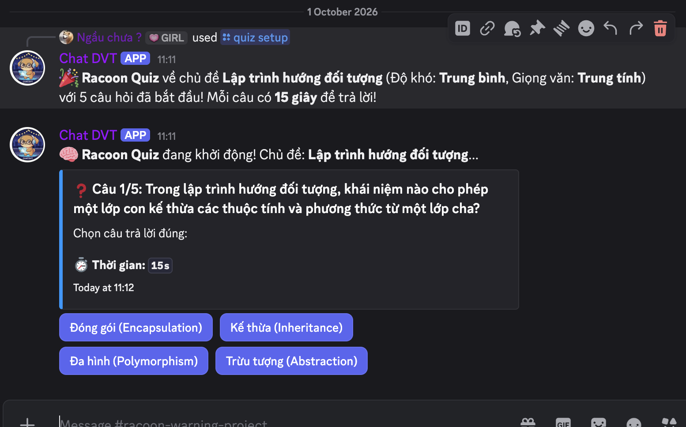
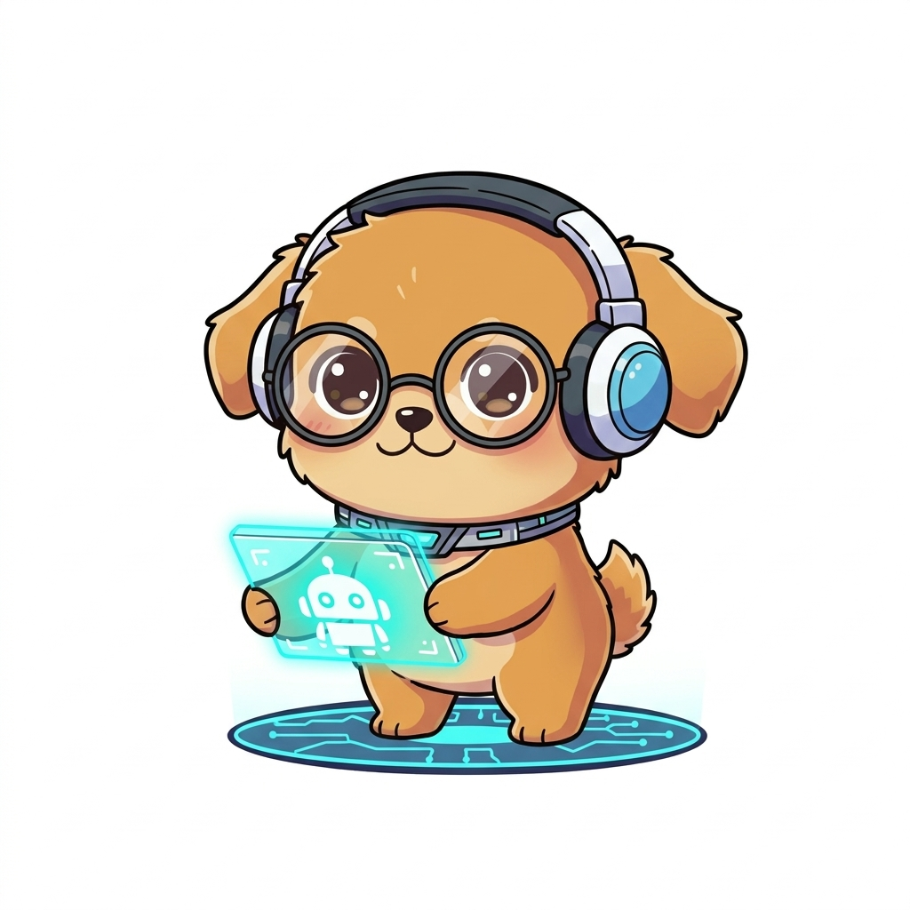

AI · Discord
ChatDVT
Trợ lý AI có cá tính: trò chuyện, hiểu nội dung và chơi quiz ngay trong cộng đồng.
Gặp ChatDVT
Mobile Software Engineer · TP. Hồ Chí Minh
Mình phát triển ứng dụng React Native, xây SDK Android và tích hợp native. Project cá nhân là nơi mình thử ý tưởng, học thêm và đưa chúng thành sản phẩm.
Đang làm việc tại South Telecom · 04/2023 — nay

MỘT SẢN PHẨM MÌNH XÂYChatDVTProjects & Lab
Một vài thứ mình đã xây, từ công cụ cho developer đến một người bạn AI trên Discord.
AI · Discord
Trợ lý AI có cá tính: trò chuyện, hiểu nội dung và chơi quiz ngay trong cộng đồng.
Gặp ChatDVT
Mobile · Developer tools
Những công cụ nhỏ để kiểm tra deep link, WebView và các phần việc mobile thường gặp.
Survivor Arena 8D · English Learning Hub · Mermaid Editor · Chibi Sticker AI
Mobile
Mình phát triển ứng dụng React Native và xử lý phần native Android bằng Kotlin. Bộ công cụ và ghi chú ở đây xuất phát từ những công việc đó.
Xem kinh nghiệm của mìnhCông cụ dành cho công việc Android.
Kiểm tra nhanh những luồng điều hướng mobile.
Ghi chú và tài liệu về React Native.
Blog · Build notes
Góc nhìn của người xây dựng đằng sau sản phẩm ChatDVT.
Xem sản phẩm trong câu chuyện Đây là preview thiết kế Blog; chưa mở nội dung bài viết trong bản mẫu.AI Chat · Người bạn hỗ trợ
ChatDVT có thể giúp bạn khám phá project và tìm thông tin về Tiến. Bản mẫu này chỉ giới thiệu vai trò, chưa kết nối chat.
Xem hồ sơ TiếnMe · Đặng Văn Tiến
Me · Người đứng sau các sản phẩm
Mình xây ứng dụng mobile cho doanh nghiệp, tập trung vào React Native, Android và tích hợp native. Hiện mình làm việc tại South Telecom.
TP. Hồ Chí Minh · Kinh nghiệm từ 04/2023
Xem kinh nghiệm thực tếKinh nghiệm thực tế
Từ tính năng ứng dụng đến SDK dùng lại và kết nối native — đây là một vài phần việc mình đã đóng góp tại công ty.
Mobile Software Engineer
Phát triển và duy trì ứng dụng Android, React Native cho doanh nghiệp.
Phát triển tính năng quản lý yêu cầu, nhắn tin, báo cáo và Android widget; xử lý lỗi vận hành.
Xây SDK ghi nhận hoạt động ứng dụng, hỗ trợ lưu dữ liệu offline và gửi lại khi có kết nối.
Tích hợp model từ đội AI thành SDK quét sản phẩm, mã vạch và nhận diện chữ.
Nâng cấp ứng dụng cũ, cập nhật nền tảng và xử lý tương thích Android.
Kết nối SDK Android để điều khiển robot và nhận trạng thái thiết bị.
Dự án công ty · Chỉ giới thiệu phạm vi đóng góp.
Ngoài công việc
Project cá nhân là nơi mình thử công nghệ mới, giải quyết vấn đề nhỏ và đưa ý tưởng vào thực tế.
Kết nối với Tiến
Mình sẵn sàng trao đổi về công việc và những sản phẩm đã xây.
Discord Bot · Một người bạn trong server
Trò chuyện, khám phá nội dung và chơi quiz — một trợ lý AI có cá tính, ngay trong Discord của bạn.
Được xây dựng bởi Đặng Văn TiếnChatDVT làm được gì?
Tiếp nối hội thoại, giải đáp câu hỏi và tương tác trong Discord.
Phân tích nội dung đa phương thức và tóm tắt cuộc trò chuyện.
Cấu hình nhân cách, giọng điệu; chơi quiz cùng cộng đồng.
Giao diện thật · Không phải mockup Discord
Ảnh chụp từ Discord của Tiến. Bấm vào từng ảnh để xem đầy đủ.
Người xây dựng
Mình là Mobile Developer, xây ChatDVT như một project cá nhân để học và thử nghiệm AI trong sản phẩm thực tế.
Tìm hiểu về TiếnMobile · Công việc chính của Tiến
Tool để test, debug và tài liệu mình dùng khi làm React Native, Android/Kotlin.
Xem kinh nghiệm mobile của mình ↗Bộ công cụ
Các tool hiện có. Đợt này chỉ thay giao diện trang giới thiệu, không thay tính năng bên trong.
Kết nối thiết bị Android qua USB, kiểm tra app và log.
USB · ChromeSoạn URI, tạo QR và kiểm tra đường dẫn mở ứng dụng.
iOS · AndroidXem nhanh HTML, CSS và JavaScript trong khung mobile.
HTML · CSS · JSTạo mã QR với màu sắc và logo của bạn.
QR · ExportTài liệu
Ghi chú về kiến trúc, kiểm thử và CI/CD.
Projects & Lab · Ngoài công việc
Những sản phẩm cá nhân, developer tools, AI lab và web game mình xây để học bằng cách làm.
Featured · Developer tools
Android Toolbox, Deep Link Tester, WebView Simulator và QR Generator.
Khám phá bộ công cụ ↗Selected work
Trợ lý AI trên Discord, hội thoại và mini game.
AI · Discord ↗Web game auto-shooter roguelike với hệ thống nâng cấp kỹ năng.
Game · WebCông cụ vẽ sơ đồ phục vụ việc học và phát triển phần mềm.
Developer ToolsKhám phá thêm
Tạo và xem trước CV.
Tạo quiz từ chủ đề bạn muốn học.
Game luyện tốc độ gõ.
Không có dự án phù hợp.
ChatDVT · AI Assistant
Hỏi về Tiến, khám phá các project hoặc cùng mình tìm hiểu một ý tưởng.
Bản duyệt giao diện. Bản React sẽ giữ API và lịch sử chat hiện có.
Blog · Viết để nhớ
Ghi lại những điều mình học khi làm mobile, xây ChatDVT và thử các project cá nhân.
Bài viết đã đăng · 01
ChatDVT không bắt đầu từ một ý tưởng startup hay một project để làm đẹp CV. Nó bắt đầu từ một lần mình dỗi mấy ông đồng nghiệp.